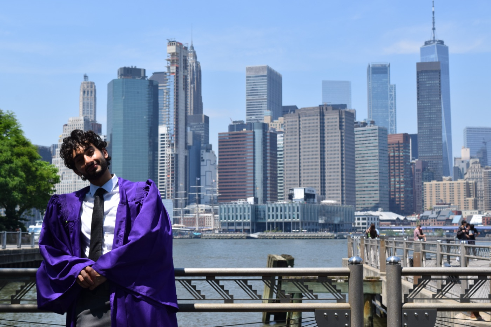

Hamza Hussain
DPhil student at the Mathematical Institute, University of Oxford. Numerical Analysis Group.
My research is in randomized numerical linear algebra and optimisation. I'm interested in how random sketching can make large matrix computations much faster while keeping them reliable, and in where those ideas meet optimisation.
Before Oxford I was at NYU, studying applied mathematics and physics. My research there covered stellarator design, entangled photon sources, and computational physics.
I grew up between Indian and Egyptian culture, and have studied in America, England, the UAE, Vietnam, and South Korea, so I have lots of lovely connections. Away from maths I love to play sports, travel, and study Islamic history, philosophy, and scripture. I think the best technical work comes from people who care about more than the technical work.

Education
-
2026 – present
University of Oxford
DPhil in Mathematics, Mathematical Institute
Numerical Analysis Group · St Catherine's College
Supervisors: Yuji Nakatsukasa and Raphael Hauser -
2022 – 2026
New York University
B.S. Applied Mathematics and Physics, Quantum Technology
Tandon School of Engineering and Courant InstituteValedictorian · GPA 4.00 / 4.00